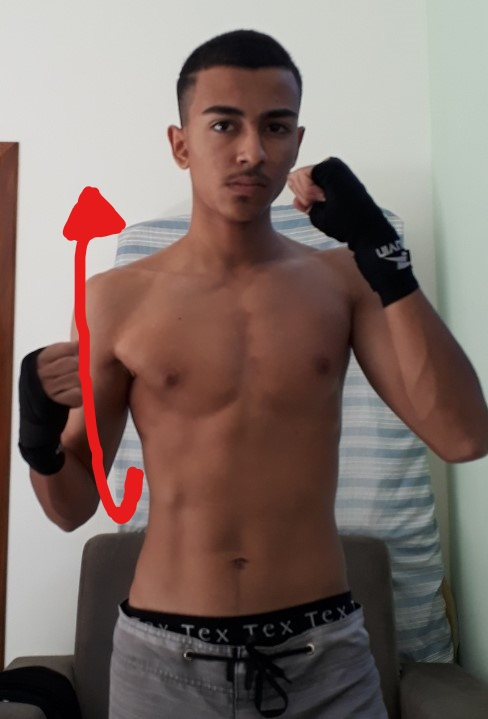
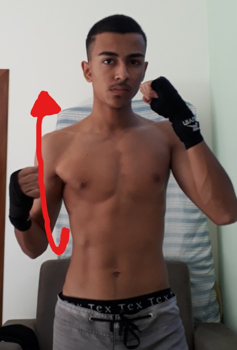
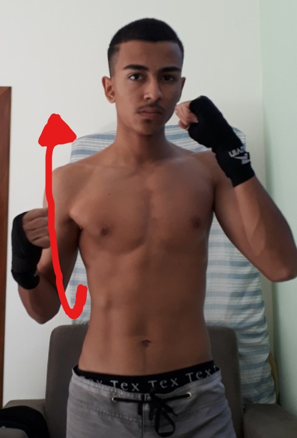
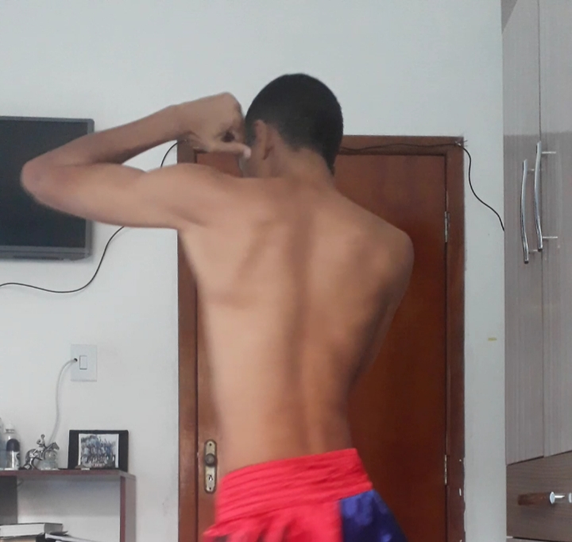
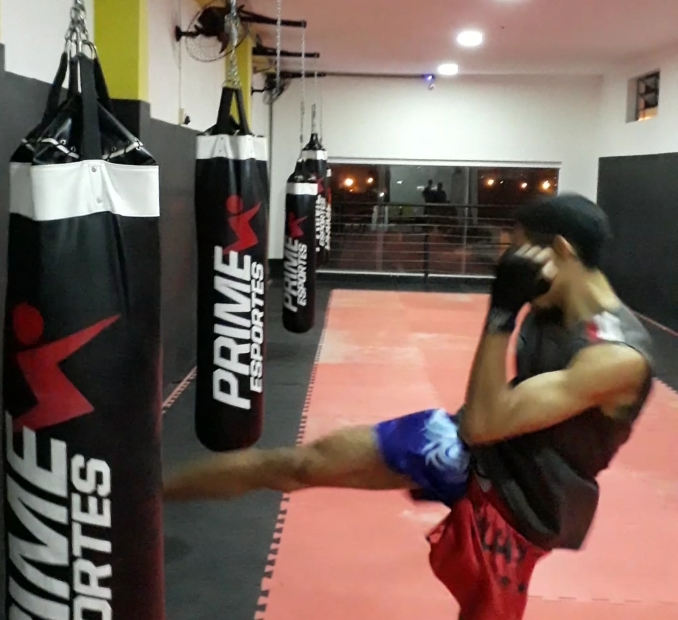
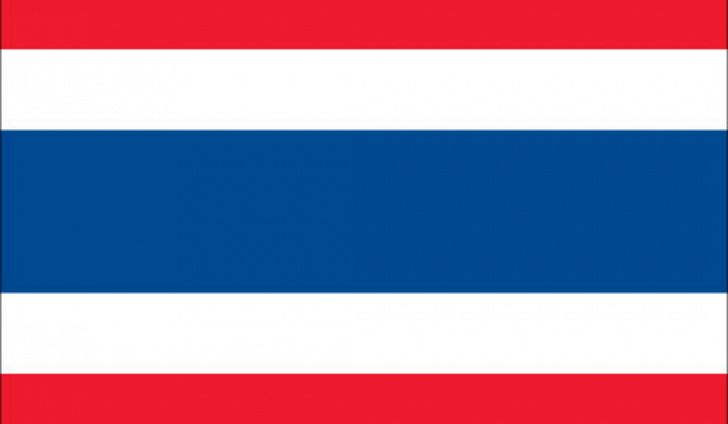

• Jab (Mat nueng)
• Direto (Mat trong)
• Uppercut (Mat Soei / Mat soi dao)
• Cruzado (Mat trong)
• Gancho (Mat wiang san)
• Soco em salto (Kradot chok)
• Gancho descendente – salto (Kradot chok)
• Punho rotativo (Mat wiang soi)
.jpg) 



1. Socos:
• Jab (Mat nueng)
• Direto (Mat trong)
• Uppercut (Mat Soei / Mat soi dao)
• Cruzado (Mat trong)
• Gancho (Mat wiang san)
• Soco em salto (Kradot chok)
• Gancho descendente – salto (Kradot chok)
• Punho rotativo (Mat wiang soi)

2. Cotovelos:
• Cotovelo horizontal (Sok tat)
• Cotovelo oblíquo (Khao chiang)
• Cotovelo circular ao tronco (Sok ti)
• Cotovelo cima-abaixo – descendente (Sok ti)
• Cotovelo de baixo-acima – ascendente (Sok Ngat)
• Cotovelo frontal – Ataque (Sok phung)
• Reverso de cotovelo horizontal (Sok wiang klap)
• Cotovelo rotativo (Mat wiang klap)
• Cotovelo rotativo com retorno (Sok klap)
• Dupla cotovelada (Sok klap khu)
• Cotovelo em salto descendente (Kradot sok)


3. Joelhos:
• Joelhada frontal (Khao trong)
• Joelhada lateral (Khao Tat’)
• Joelhada circular (Khao chiyang)
• Joelhada em salto (Khao loy)
• Joelhada frontal penetrante (Khao-youn)
• Joelhada em escada (Yiep-khao)

4. Pernas:
• Frontal (Tei-trong)
• Circular ao Tronco (Tei-chiyang)
• Circular alto (Tei-kan-kro)
• Low-kick ou circular baixo (Tei-tat)
• Semi-circular (Tei-rid)
• Circular cima-abaixo (Tei-kot)
• Circular em Escada (Yiep-tei)
• Circular em Salto (Kra-tote-teii)
• Lateral (Tip-kang)
• Rotativo de calcanhar (Tip klap lang)
• Rotativo de calcanhar em gancho (Tei klap la)


